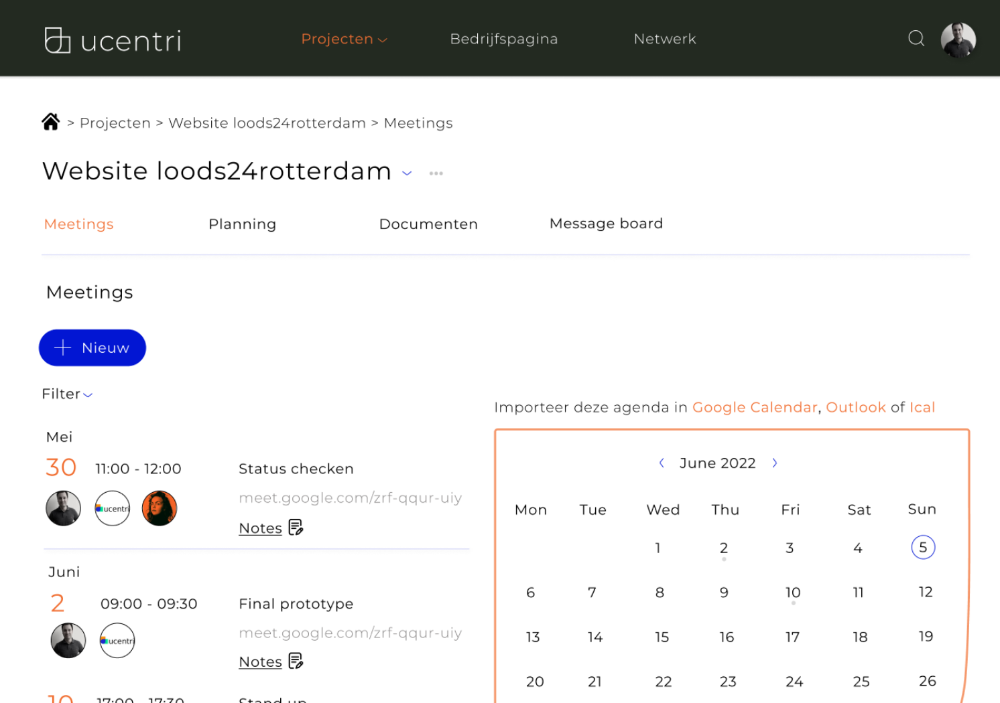

Misinformation on TikTok
A 'Check it' feature in a social media app to have a better view of what is real or fake content. The large-scale research is based on teenagers and the use of social media.
UX

Carbon footprint feature - ING
A feature in the ING app that provides insight into user C02 emissions.
UX

Platform Ucentri
Researched the users of Ucentri in order to create an optimal project management tool for their own platform.
UX / UI